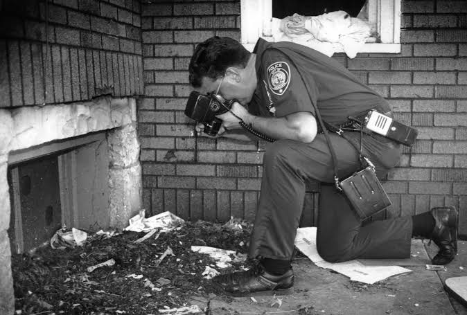

Investigation and Arrest

The investigation into Dahmer's crimes changed significantly after his arrest in July 1991. Police searched his apartment and discovered evidence that connected him to multiple murders.
Investigators subsequently questioned Dahmer about his crimes. His statements and the evidence collected during the investigation became important parts of the criminal case.
The Trial
Dahmer was tried in Wisconsin in 1992. He was found guilty of multiple counts of murder and received multiple life sentences.
The trial attracted significant media attention and became an important case studied in criminal justice and law enforcement discussions.